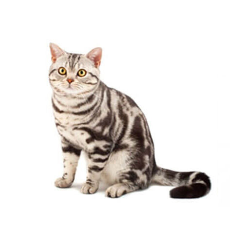

American shorthair
เชื่อว่าหลายๆ คนไม่ว่าจะอยู่ในวงการทาสแมวหรือไม่ เมื่อพูดถึงสายพันธุ์แมวก็ต้องนึกถึงน้องสายพันธุ์อเมริกัน ช็อตแฮร์ (American Shorthair) เป็นอันดับต้นๆ เรียกได้ว่าถึงไม่รู้จักแต่ก็ต้องเคยเห็นหน้ามาก่อนที่ไหนสักแห่ง
แม้ว่าจะมีลายเต็มตัว แต่หัวใจของน้องแมวอเมริกัน ช็อตแฮร์ นั้นอ่อนโยนไม่แพ้ใคร